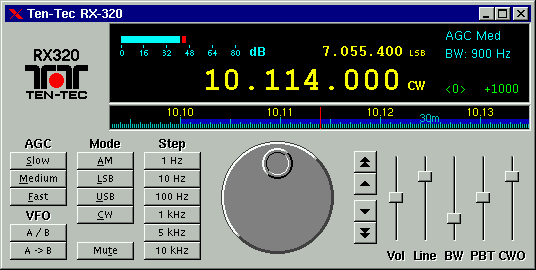

Basic operation
The main program window is shown below. You can click on any control
for help.

Tuning the receiver
Tuning the receiver to a station can be performed in a variety of ways:
Using the main tuning knob
The main tuning knob works like a real one, and not like the knob in
Ten-Tec's Windows program. To use it, click on the small hole and
drag the pointer around in circles.
Using the slide-ruler dial
The slide-ruler dial displays a section of the band. You can click and drag
on the slider to tune to the desired frequency.
Using the tuning buttons
If you don't feel comfortable with the tuning knob or the slide-ruler dial,
to the right of the main tuning knob you have four buttons that you can also
use for tuning. The single-arrow buttons tune up and down by the current
tuning step, the double-arrow ones tune by 10 times that value.
Using a wheel mouse
If you have a wheel mouse supported by your X server, then you can use the
wheel to tune up and down with the selected step, or ten times the step
value if you hold the Shift key down (note that for this to work you must
keep the mouse pointer located anywhere over the main window).
Using the keyboard
You can tune the receiver using the computer keyboard as well:
- Use the Right and Left arrow keys to tune up and down in frequency by
the currently selected tuning step.
- Use PgUp and PgDn to tune by 10 times the current step.
- Use the plus (+) and minus (-) keys to change the tuning step.
- Use the number keys to directly enter a frequency in Hertz,
finish with Enter to tune to the entered frequency, Escape aborts the
operation.
The full list of supported keyboard shortcuts is given
here.
The tuning step is adjustable by selecting one of the Step
buttons.
Selecting a detection mode
Use the Mode buttons to select the receiver detection mode:
- Use AM for most Shortwave and AM Broadcast band listening.
- Use USB and LSB for listening to sideband modes, and in some cases, AM.
- Use CW mode for listening to Morse code and digital modes.
Changing AGC settings
The AGC (Automatic Gain Control) determines how quickly the receiver gain is
allowed to increase. The RX320 provides three different AGC settings that
can be used to maximize receiver performance under different conditions:
- The Medium setting is good for general listening.
- The Slow setting will help to reduce static during breaks in SSB
transmissions.
- The Fast setting may be needed when atmospheric conditions, such as
lightning, make hearing a weak station difficult.
Select the appropriate setting using the AGC buttons. The current
setting is indicated in the main display.
Volume control
The Vol slider operates the main speaker output from the receiver.
The Line slider operates the line output audio.
You can also change the volume using the keyboard:
- Use the Up and Down arrow keys to increase and decrease the speaker volume.
- Use <Shift-Up arrow> and <Shift-Down arrow> keys to increase and decrease
the line output volume.
More keyboard shortcuts.
Use the Mute button to mute the receiver. Both the main speaker and
the line output are silenced. Press the button again to resume audio
output.
Choosing a filter
Use the BW (Bandwidth) slider to set the receiver filter width.
The selected filter width is indicated in the main
display.
- Use wide filter widths (3.0-8.0 KHz) for AM listening.
- Use medium widths (1.8-3.0 KHz) for sideband (USB and LSB)
listening.
- Use narrow widths (300 Hz-1.8 KHz) for CW and digital modes.
Passband tuning (IF shift)
The PBT (Passband Tuning) slider shifts the center of the passband up
or down, while the tuning frequency remains the same. This can be used to
eliminate an interfering signal just above or below the one you are trying
to listen to.
CW offset
The CWO (CW offset) slider works only in CW mode and its action is
similar to the BFO control found commonly in communication receivers. When
receiving a CW signal, you can tune to the exact frequency of the signal and
use the CWO slider to change the output audio tone.
The control is also useful in digital modes, like RTTY or HF fax: as with CW
signals, tune to the center frequency of the signal and then use the CW
offset control to shift the signal up or down in frequency as required by the
decoder software.
VFO
The program emulates a receiver with two separate VFO (Variable Frequency
Oscillator). Each VFO saves not only the current frequency the receiver is
tuned to, but also the tuning step, detection mode, filter, AGC, PBT
and CW offset settings.
You can switch at any time between the current and the alternate VFO with
the A/B button. To save the current settings into the alternate
VFO, use the A->B button.
Main Menu
The application main menu is accessible by right clicking on the main window
(in the current version you may right-click anywhere, except over a slider
control).
The following options are available:
Note that Frequency Database windows have
their own separate menu system.